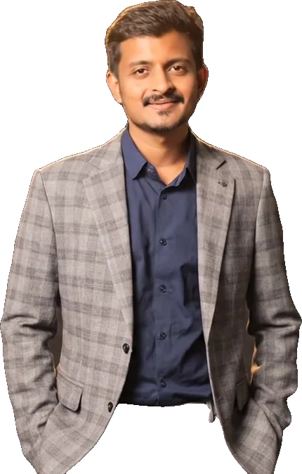

MSc coursework, 2025 – 2026
Company valuation and LBO analysis
Valued companies with three methods in Excel: discounted cash flow, trading multiples and a leveraged buy-out model.
Compared how a deal could be financed with equity, debt and mezzanine capital. Module grade: 90% in M&A, Buy-Outs & Corporate Restructuring.
ExcelDCFTrading multiplesLBO

Live project
Erstjahr: your first year in Germany, compared
A comparison website for international students: blocked accounts, health and liability insurance and bank accounts, plus a first-year cost calculator and a working student calculator. Real 2026 prices with sources, no commission.
Open Erstjahr
Internship client project, 2024
Customer loyalty analysis for D-Mart
Cleaned and analysed monthly customer purchase data in Python to find the products regular customers buy most, then compared supplier prices and helped find a cheaper supplier for the same items. The savings paid for yearly gifts for regular customers. Team result: around 500 new customers during my internship.
PythonCustomer analyticsSupplier comparison
Master's project, Sep 2025 – Sep 2026
Market entry strategy: Tom Ford in Switzerland
Analysed the Swiss luxury market across all six PESTLE dimensions and the competitive landscape, defined target customer segments, and recommended market entry, pricing and positioning.
PESTLEMarket researchPowerPoint
Internship work, 2024
KPI dashboards and reporting data
Cleaned and standardised raw business data in Python and Excel, then built interactive Power BI dashboards to monitor KPIs and visualise business performance.
Power BIPythonExcel
Live on this site
Interactive DCF valuation model
A working discounted cash flow model with a sensitivity table. Change the assumptions and see the value per share move.
Try the model
Live on this site
KPI sales dashboard demo
A Power BI-style dashboard with filters, KPI cards and interactive charts, built on generated sample data.
Open the dashboard